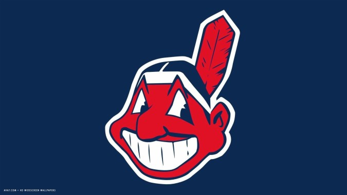
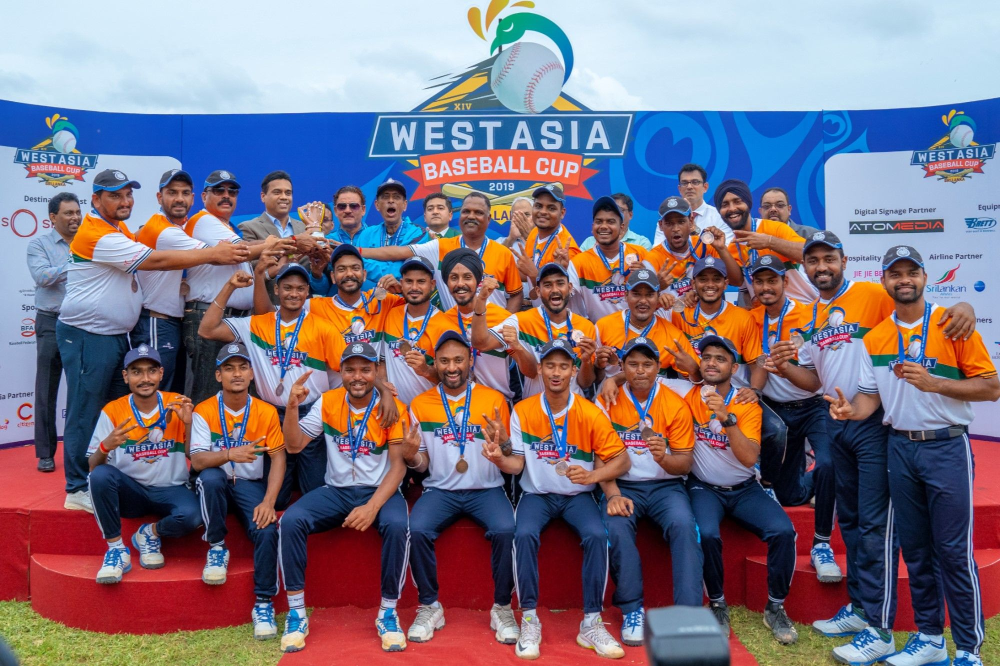

|  |
Equipments needed for baseball are- Baseball , Baseball bat , Baseball glove, Batting helmet, Catcher's gear. |
 |
Baseball is a bat-and-ball sport played between two teams of nine players each, taking turns batting and fielding. The game is in play when a player on the fielding team, called the pitcher, throws a ball that a player on the batting team tries to hit with a bat. The objective of the offensive team (batting team) is to hit the ball into the field of play, away from the other team's players, allowing its players to run the bases, having them advance counter-clockwise around four bases to score what are called "runs". The objective of the defensive team (referred to as the fielding team) is to prevent batters from becoming runners, and to prevent runners' advance around the bases.[2] A run is scored when a runner legally advances around the bases in order and touches home plate (the place where the player started as a batter).
The principal objective of the batting team is to have a player reach first base safely; this generally occurs either when the batter hits the ball and reaches first base before an opponent retrieves the ball and touches the base, or when the pitcher persists in throwing the ball out of the batter's reach. Players on the batting team who reach first base without being called "out" can attempt to advance to subsequent bases as a runner, either immediately or during teammates' turns batting. The fielding team tries to prevent runs by getting batters or runners "out", which forces them out of the field of play. The pitcher can get the batter out by throwing three pitches which result in strikes, while fielders can get the batter out by catching a batted ball before it touches the ground, and can get a runner out by tagging them with the ball while the runner is not touching a base. The opposing teams switch back and forth between batting and fielding; the batting team's turn to bat is over once the fielding team records three outs. One turn batting for each team constitutes an inning. A game is usually composed of nine innings, and the team with the greater number of runs at the end of the game wins. If scores are tied at the end of nine innings, extra innings are usually played. Baseball has no game clock, although most games end in the ninth inning.